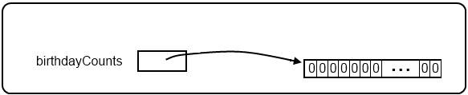
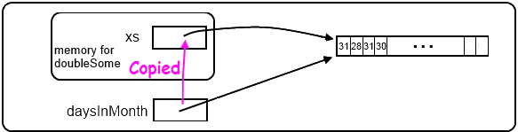

14. Arrays¶
An array is a structure that can hold a number of individual values at the same time.
The individual values that make up an array are called its elements, or its items. (We will use either term to mean the same thing.) All the elements in an array must be of the same type: so we can have an array of students, an array of integers, an array of strings, or an array of turtles.
Like strings, individual elements in the array can be accessed by indexing. The first element is always at position 0, the next at position 1, and so on. Unlike strings, though, each element of the array is a variable, so an element can by changed by assigning another value to it as the program runs. (Recall that strings are read-only — we cannot assign to individual elements.)
14.1. Defining and initializing arrays¶
We’ve already seen the easiest way to define and initialize small arrays:
1 2 3 4 | string[] daysOfWeek = { "Sun", "Mon", "Tue", "Wed",
"Thur", "Fri", "Sat" };
int[] daysInMonth = { 31, 28, 31, 30, 31, 30,
31, 31, 30, 31, 30, 31 };
|
The first example defines and initializes an array of seven strings. (The initializer is the bit in braces.) The second defines and initializes an array of 12 integers.
We read string[] daysOfWeek as string array called daysOfWeek.
Do learn to mentally group the array definition brackets with the type — the new type is “int array” or “string array”.
An array is an object. One needs to define a variable that can hold a reference to the object. And, as a separate step, we need to create the object and make the variable reference it.
So let’s imagine that we want to count how many students will have a birthday on each day this year. (We will assume it is not a leap year). We’d need 365 counters to keep track of how many birthdays we’ve seen so far on each day of the year. Each student calculates their “day index number” corresponding to their birthday (1 Jan would be index 0, 31 Jan would be index 30, 1 Feb would be index 31, 31 December would be index 364, etc.) If the student’s birthday is on day 42, then we’d increment element 42 in the array.
We start like this:
1 2 3 | int[] birthdayCounts;
...
birthdayCounts = new int[365];
|
Line 1 defines a variable that can reference an array of int. It gives it an initial value null.
Line 3 (always evaluate the right-hand side of an assignment first)
creates a new object — an array of 365 integers — in
the heap. It then assigns the reference to that object to the variable. Recall that if we don’t give an integer an
initial value, C# will set it to 0 for us. So all 365 ints in the array are now zero. So memory looks like this now:

So defining an array doesn’t give us an array. It gives us a variable that can
reference an array.
We strongly encourage to using the single-stepping debugger and inspector to watch the variable birthdayCounts
as we execute the lines above. The idea that these variables do not hold their values directly, but they hold a reference
to the value that is created separately was covered in the previous chapter.
C# tries to make our lives easier, so they allow little short cuts. For example, we can combine lines 1 and 3 above into a single line:
1 | int[] birthdayCounts = new int[365];
|
Even though there is only one line of code, there are still three distinct things going on here. The right hand side creates the array, and initializes its elements. The left hand side creates a variable that can hold a reference to an array of int. Then the assignment makes the variable point to the array.
So the easy syntax we’ve used to create small arrays with an initializer is also just shorthand:
1 2 3 4 | string[] daysOfWeek = { "Sun", "Mon", "Tue", "Wed",
"Thur", "Fri", "Sat" };
int[] daysInMonth = { 31, 28, 31, 30, 31, 30,
31, 31, 30, 31, 30, 31 };
|
This short syntax is entirely equivalent to the more verbose:
1 2 3 4 | string[] daysOfWeek = new string[7] { "Sun", "Mon", "Tue", "Wed",
"Thur", "Fri", "Sat" };
int[] daysInMonth = new int[12] { 31, 28, 31, 30, 31, 30,
31, 31, 30, 31, 30, 31 };
|
Here the explicit new step reminds us that we have to instantiate the array.
If we use this syntax, the C# compiler will double-check that the length of the initializer matches the
number of elements we allocated for the array. So the information is actually redundant — it can
tell how big the array needs to be by looking at the initializer first. So if we provide an initializer
we can leave out the explicit size too:
1 2 3 4 | string[] daysOfWeek = new string[] { "Sun", "Mon", "Tue", "Wed",
"Thur", "Fri", "Sat" };
int[] daysInMonth = new int[] { 31, 28, 31, 30, 31, 30,
31, 31, 30, 31, 30, 31 };
|
Sometimes having the programmer supply the number of elements in the array explicitly
can be a good thing. For example, if we left out one of the initializer values when
typing in the daysInMonth initializer, we’d either end up with only 11 months in our year,
or we’d get a compilation error if we explicitly said “expect 12 elements”.
There are other ways to create arrays also.
In the chapter on strings we also saw the Split method which takes a string
and splits it into pieces, returning an array of strings. We were able to break Alice in Wonderland into
an array of strings. We did this twice. The first time, each string was just one word from the book.
In the other case, each string was a whole line from the book.
So there are some methods like this that we’ll encounter that can create and initialize an
array of values for us.
Once an array is created its number of elements stays fixed. (This is not entirely true, but trying to resize arrays is beyond our scope, and is probably a bad idea anyway.)
14.2. Accessing elements¶
The syntax for accessing the elements of an array is the same as the syntax for
accessing the characters of a string — the index operator: []. The expression inside the brackets specifies
the index. Remember that the indices start at 0. So daysOfWeek[2] has the value "Tue".
Any expression that evaluates to an integer can be used as an index:
If we try to access or assign to an element at a position that is outside the bounds of the array, we’ll get an exception (error) saying “Index was outside the bounds of the array”.
It is common to use a loop variable as an index for traversing all the elements of an array.
Like strings, every array has a Length property that determines the number of elements in the array.
So let’s consider this method that sums up an array of ints:
1 2 3 4 5 6 7 8 9 10 11 12 13 | private int sumElems(int[] xs)
{
int total = 0;
for (int i=0; i < xs.Length; i++)
{
total += xs[i];
}
return total;
}
...
int[] daysInMonth = { 31, 28, 31, 30, 31, 30, 31, 31, 30, 31, 30, 31 };
Tester.TestEq(sumElems(daysInMonth), 365);
|
Each time through the loop, the variable i is used as an index into the
array, accessing the i‘th element. This pattern of computation is called an
array traversal.
The example shows how to define a parameter that is an array (line 1), and shows that arrays can be passed as arguments (line 13)
The above sample doesn’t need or use the index i for anything besides getting
the items from the array, so this more direct version — where the foreach loop gets
the items for us — might be preferred:
1 2 3 4 5 6 7 8 9 | private int sumElems(int[] xs)
{
int total = 0;
foreach (int val in xs)
{
total += val;
}
return total;
}
|
The test on line 13 still passes.
14.3. Modifying elements of an array¶
Unlike read-only strings, we can assign new values to elements of an array.
So let’s start with our daysInMonth array above, and we’ll traverse
all the elements, doubling any element that is odd.
1 2 3 4 5 6 7 8 9 10 11 12 13 14 15 | private void doubleSome(int[] xs)
{
for (int i=0; i < xs.Length; i++)
{
if (xs[i] % 2 == 1) // is it odd?
{
xs[i] *= 2;
}
}
}
...
int[] daysInMonth = { 31, 28, 31, 30, 31, 30, 31, 31, 30, 31, 30, 31 };
doubleSome(daysInMonth);
...
|
After this operation (say at line 15) we could inspect the array (using the debugger), or output the
elements (one at a time), and we’d confirm that the daysInMonth array now contains
the values { 62, 28, 62, 30, 62, 30, 62, 62, 30, 62, 30, 62 }.
We previously saw that when we pass a reference-type argument (daysInMonth, in this case) to
a parameter (xs in this case) we make a copy of what is in daysInMonth.
But what gets copied is the reference to the array, not the array itself.
So if we inspect the state of memory when we get to line 3 in the code above, we’d have this situation:

This shows that while we are executing doubleSome, the two variables xs and daysInMonth are aliases.
So if we make changes to elements of xs, we’re actually changing the same array as is referenced by daysInMonth.
14.4. Methods that return arrays¶
Methods can return objects. So they can return arrays. A method that needs to return an array should a) find out how many elements are required, b) create the array of the correct size c) fill the array with the values to be returned, d) return the array to the caller.
Let us generate and return an array containing the first 100 prime numbers. (We’ll assume we
did the exercise to write isPrime in the chapter about iteration.)
1 2 3 4 5 6 7 8 9 10 11 12 13 14 15 16 17 18 | private int[] generateArrayOf100Primes()
{
int[] ps = new int[100]; // Create an array of 100 items
int numFound = 0;
int candidate = 2;
while (numFound < 100)
{
if (isPrime(candidate))
{
ps[numFound] = candidate;
numFound++;
}
candidate++;
}
return ps;
}
|
We should be able to inspect (or print) our data, and confirm that the 100th prime number is indeed 541.
14.5. Arrays of Arrays¶
We often want arrays of arrays, to represent two-dimensional data, or sometimes even more dimensions. For example, suppose we have rainfall data from three different sites, for each of the four quarters of the year. We might end up with a table like this:
Quarter site1 site2 site3 Q1 165.3 170.5 172.1 Q2 149.6 140.3 152.3 Q3 44.3 42.4 45.0 Q4 95.3 89.8 92.4
How could we represent this data in a C# program? By creating an array where each element was another array representing one of the quarters. (Arrays of arrays are often called jagged arrays.)
1 2 3 4 5 6 | double[][] rainfall =
{ new double[] { 165.3, 170.5, 172.1 }, // Q1
new double[] { 149.6, 140.3, 152.3 }, // Q2
new double[] { 44.3, 42.4, 45.0 }, // Q3
new double[] { 95.3, 89.8, 92.4 } // Q4
};
|
With an array of arrays, a traversal of all the elements will need two loops, one nested in the other. So let us find the average rainfall for each quarter. This means we’ll need to sum up across each row, divide by 3, and we’ll get four averages — one for each quarter.
1 2 3 4 5 6 7 8 9 10 11 12 13 14 | // Create an average reading for each quarter
double[] avgs = new double[4];
for (int q = 0; q < 4; q++)
{
int[] currQuarter = rainfall[q];
double sum = 0;
for (int col = 0; col < 3; col++)
{
sum += currQuarter[col];
}
avgs[row] = sum / 3.0;
}
Tester.TestEq(avgs, new double[] {169.3, 147.4, 43.9, 92.5}, 0.1);
|
At this point we can inspect the avgs array, or display the values
and confirm that they match. We’ve used a unit test here, with an extra third argument
that provides for some tolerance for possible errors because we’re working with floating
point values. So this test says “call the numbers equal if they’re within 0.1 of each other”.
Here is a jagged example: Each student in a university is registered for some subjects:
1 2 3 4 5 6 | string[][] registrations =
{ new string[] { "Maths", "CompSci", "Music", "Physics" },
new string[] { "Maths", "CompSci", "Economics" },
new string[] { "CompSci", "Economics", "Accounting", "Law" },
new string[] { "Philosophy" }
};
|
14.6. Glossary¶
- element
- One of the values in a array (or other sequence). The bracket operator selects elements of an array. An element is also called an item.
- index
- An integer value that indicates the position of an item in an array. Indexes start from 0.
- item
- See element.
- jagged array
- An array of arrays. Not all “rows” of data need to have the same number of elements (so it could look jagged!)
14.7. Further Reading¶
Microsoft’s Arrays Tutorial, at http://msdn.microsoft.com/en-us/library/aa288453(v=vs.71).aspx
14.8. Exercises¶
Write a method to return the biggest item from a non-empty array of int. Provide some test cases to test your method.
Write a method to return the sum of all the odd numbers in an array of int. Provide some test cases to test your method.
Write a method to search for a given target string in an array of strings. The method should return the index at which the target is found. If the target is not found, it should return -1. Provide test cases to test all the important cases: the target could match the first element or the last element in the array, or some element in the middle, or it may not exist in the array at all.
Use the method above to write a method that turns a month name into a corresponding month number, so that these tests pass:
1 2 3
Tester.TestEq(monthName("January"), 1); Tester.TestEq(monthName("June", 6); Tester.TestEq(monthName("November"), 11);
Assume we have this definition in our code:
1 2
int[] daysInMonth = new int[] { 31, 28, 31, 30, 31, 30, 31, 31, 30, 31, 30, 31 };
Write a method that takes a day number and a month name, and returns the day number within the (non-leap) year. Assume days are numbered starting from 0. For example,
dayMonthToDay("March", 12)should give the result 70.Arrays can be used to represent mathematical vectors. In the next few exercises we will write methods to perform standard operations on vectors. Write C# code to pass the tests in each case.
Write a method
dotProduct(u, v)that takes two arrays of numbers of the same length, and returns the sum of the products of the corresponding elements of each (the dot product).1 2 3
Tester.TestEq(dotProduct(new double[] {1, 1}, new double[] {1, 1]}, 2); Tester.TestEq(dotProduct(new double[] {1, 2}, new double[] {1, 4.5]}, 10); Tester.TestEq(dotProduct(new double[] {1, 2, 1}, new double[] {1, 4, 3}), 12);
Write a method
addVectors(u, v)that takes two arrays of doubles of the same length, and returns a new array containing the sums of the corresponding elements of each:1 2 3 4 5 6 7 8 9 10 11 12
double[] v1 = {1, 1}; double[] v2 = {2, 2}; double[] v3 = {1, 2}; double[] v4 = {1, 4}; double[] v5 = {2, 6}; double[] v6 = {1, 2, 1}; double[] v7 = {1, 4, 3}; double[] v8 = {2, 6, 4}; Tester.TestEq(addVectors(v1, v1), v2); Tester.TestEq(addVectors(v3, v4), v5); Tester.TestEq(addVectors(v6, v7), v8);
Write a method
scalarMult(s, v)that takes a number,s, and a array,vand returns the scalar multiple ofvbys:1 2 3 4
Tester.TestEq(scalarMult(5.5, new double[] {1, 2}), new double[] {5.5, 11.0}); Tester.TestEq(scalarMult(3, new double[] {1, 0, -1}), new double[] {3, 0, -3}); Tester.TestEq(scalarMult(7, new double[] { 3, 0, 5, 11, 2 }), new double[] { 21, 0, 35, 77, 14 });
Extra challenge for the mathematically inclined: Write a method
crossProduct(u, v)that takes two arrays of doubles of length 3 and returns their cross product. Write your own tests.In the chapter on Iteration we had two problems (the Drunk Pirate, and Tess draws a House) that used “parallel arrays”: we had an array of
turnsfor the angle to turn the turtle, and an arraystepsfor the distance to move the turtle. The i’th element of the one array was (implicitly) associated with the i’th element of the other array.Re-solve those problems using a jagged array instead. Each row in the outer array contains an inner array with two elements — a step and a turn.